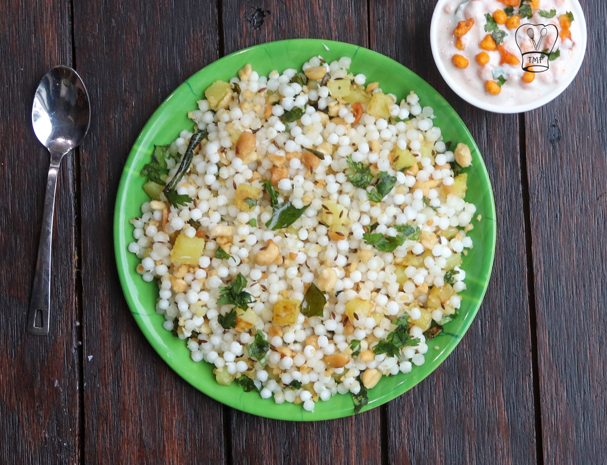

Sabudana Khichdi
⭐⭐⭐⭐⭐ 4.9 Rating | ⏱ 360 Minutes | 🍽 2 Servings
Category
Breakfast/Snacks
Difficulty
Medium
Calories
310 kcal
Cooking Style
Precision
📋 Ingredients
- 1 cup Sabudana (Tapioca pearls)
- 1/2 cup Raw peanuts
- 1 medium Potato (boiled, peeled, and cubed)
- 2 tbsp Ghee or peanut oil
- 1 tsp Cumin seeds
- 2 green chillies (finely chopped)
- 1 sprig curry leaves
- 1 tsp Sugar
- 1/2 tsp Sendha namak (rock salt) or regular salt
- 2 tbsp fresh coriander leaves (chopped)
- 1 tbsp fresh lemon juice
🍳 Required Utensils
- Wide glass bowl
- fine-mesh strainer
- non-stick pan/skillet
- spice grinder/mortar
- spatula
📖 Introduction
Sabudana Khichdi is a popular Western Indian dish made from soaked tapioca pearls (sago), roasted coarse peanut powder, boiled potatoes, and gentle aromatics. It is a staple during religious fasting (Navratri, Ekadashi) and a beloved breakfast.
🔬 Principle
The dish relies on properly hydrating tapioca starch without over-saturating it. Coat the soaked, drained pearls with coarsely ground roasted peanuts before cooking; the peanut powder coats the pearls, absorbing residual moisture and preventing them from clumping into a sticky gel when tossed over low heat.
👨🍳 Procedure
- Rinse and Soak Sabudana
- Wash sabudana under cold water 3–4 times until water runs completely clear of loose starch.
- Drain well, then submerge in a bowl with just enough water to cover it (about 1/2 inch above the pearls).
- Soak for 5–6 hours or overnight.
- Dry-roast raw peanuts in a pan until golden and skins crackle.
- Cool, skin them, and grind into a coarse powder.
- Drain any remaining water from the soaked pearls, then toss the pearls directly with the peanut powder, salt, and sugar in a bowl.
- Heat ghee or oil in a pan over medium heat. Add cumin seeds and let them splutter.
- Add chopped green chillies, curry leaves, and cubed boiled potatoes.
- Sauté for 2 minutes until potatoes crisp slightly.
- Add the coated sabudana-peanut mixture to the pan.
- Cook on low-medium heat, stirring gently, for 3–5 minutes until the pearls turn translucent (do not overcook).
- Turn off heat, sprinkle lemon juice and coriander, cover with a lid for 2 minutes to rest.
⚠ Precautions
- High glycemic index dish
- Those with diabetes should control portion size or balance it with added fiber.
💡 Chef Tips
- Always keep the soaking water level flush with the top of the sabudana pearls. Excess water causes them to dissolve into a sticky paste during cooking.
- Cook only until the opaque white center of the pearls turns clear/translucent. Overcooking makes them chewy and gummy.
- Mixing the coarse peanut powder directly into the cold, soaked sabudana before putting it in the hot pan guarantees non-sticky, separated grains.
🥗 Nutrition Facts
| Nutrient | Amount |
|---|---|
| Calories | 310 kcal |
| Protein | 6 g |
| Carbohydrates | 52 g |
| Fat | 9 g |
| Fiber | 3 g |
🍽 Serving Suggestions
- Serve warm with fresh sweet curd (yogurt) or chilled cucumber raita.
- Accompany with crispy potato chips (fasting-friendly) and a hot cup of masala chai.
🌿 Health Benefits
- Tapioca provides quick, easily digestible carbohydrates for rapid energy—ideal during fasts.
- Peanuts add plant protein and healthy fats.
✅ Result
A light, non-sticky dish featuring translucent, soft tapioca pearls interspersed with crunchy roasted peanuts, tender potatoes, and a sweet-tangy finish from lemon and sugar.
🎥 Watch Recipe Video
Learn the complete recipe by watching the step-by-step video.
▶ Watch on YouTube